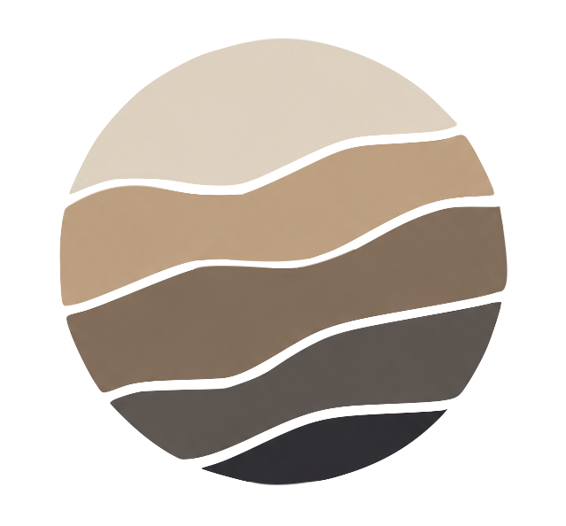

G
E
O
S
C
I
Explore
Articles
Research
News
Geosci / Structural geology
Reading a geological cross-section
Order of events
Rock key
Mapping the rocks… 0%
Click a numbered marker to explore it · keys 1–8 also work
Rock key
Conglomerate
Sandstone
Shale
Limestone
Siltstone
Slate (older, tilted)
Granite (intrusion)
Dolerite (dyke)
Hornfels / marble (baked rock)